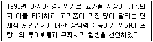
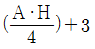
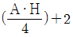
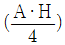
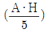
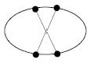

패션머천다이징산업기사 (2010-03-07 기출문제)
1과목: 패션마케팅
1. 머천다이저에 대한 설명 중 틀린 것은?
- 자기의 독창적인 발상이나 착상을 실현하기 위한 전 과정의 계획, 설계 및 조직을 하는 사람이다.
- 상품기획 부문의 총괄자로서 생산에서 판매부문에 이르기까지 광범위한 직무 영역을 가지고 새로운 브랜드 개발과 상품기획을 하는 사람이다.
- 유통업 분야와 제조업 분야에 따라 리테일 머천다이저와 어패럴 머천다이저로 구분된다.
- M.D 라고 불리우며 상품 및 취급방법에 관한 책임자를 뜻한다.
(정답률: 알수없음)

2. 광고의 4대 매체에 해당되지 않는 것은?
- 잡지
- 신문
- 전화
- TV
(정답률: 알수없음)
3. 클래식한 이미지를 가진 폴로나 빈폴과 같은 브랜드의 적합한 상품군 구성의 설명으로 가장 옳은 것은?
- 시즌별로 유행에 맞춰 구성한다.
- 트렌디한 상품보다 베이직이나 뉴베이직 상품에 더 비중을 둔다.
- 베이직, 뉴베이직, 트렌디한 상품에 동일한 비중을 둔다.
- 베이직이나 뉴베이직 상품보다 트렌디한 상품에 더 비중을 둔다.
(정답률: 알수없음)
4. 패션머천다이징의 개념을 가장 잘 설명하고 있는 것은?
- 전체 제품시장을 어떤 기준을 이용하여 동질적인 세분시장으로 나누는 과정이다.
- 고객들에게 제품을 판매하여 올리는 수익의 일부를 포인트, 적립금, 쿠폰, 현금 등의 형태로 되돌려 줌으로써 소비자의 미래가치를 높이고 기업에 대한 충성도를 지속적으로 유지, 강화하는 마케팅 노력이다.
- 한 개인의 살아가는 방식으로서, 보통 개인의 활동, 관심, 의견을 의미한다.
- 표적고객의 욕구를 만족시키기 위하여 패션제품이나 서비스를 적절한 장소와 적절한 시간에 적절한 양과 가격으로 제공하기 위한 상품기획을 말한다.
(정답률: 알수없음)
5. Engel, Blackwell 및 Miniard의 소비자 구매의사 결정과정을 순서대로 바르게 나열한 것은?
- 정보탐색 → 문제인식 → 대안평가 → 구매 → 사용 및 평가
- 문제인식 → 정보탐색 → 대안평가 → 구매 → 사용 및 평가
- 정보탐색 → 대안평가 → 문제인식 → 구매 → 사용 및 평가
- 문제인식 → 대안평가 → 정보탐색 → 구매 → 사용 및 평가
(정답률: 알수없음)
6. 관여도와 구매의사결정방식에 따른 구매행동유형 중 구매대안을 결정함에 있어 완벽성을 추구하기 위해 포괄적 의사결정을 선호하는 소비자의 구매행동 유형은?
- 다양성 추구형
- 관성적 반복구매형
- 상표충동적 구매형
- 고관여 구매형
(정답률: 알수없음)
7. 제조업 머천다이징 시스템의 주업무 순서가 옳은 것은?
- 마케팅 정보분석 → 표적시장 설정 → 머천다이징컨셉설정 → 상품구성 → 디자인개발 → 가격결정 → 품평 및 수주
- 마케팅 정보분석 → 표적시장 설정 → 머천다이징컨셉설정 → 디자인개발 → 상품구성 → 가격결정 → 품평 및 수주
- 마케팅 정보분석 → 표적시장 설정 → 머천다이징컨셉설정 → 상품구성 → 가격결정 → 디자인개발 → 품평 및 수주
- 마케팅 정보분석 → 표적시장 설정 → 머천다이징컨셉설정 → 가격결정 → 상품구성 → 디자인개발 → 품평 및 수주
(정답률: 알수없음)
8. 의류업체가 디자인과 총무 업무에 종사하는 직원에게 주는 월급은 제품의 원가구조 중 어디에 해당 하는가?
- 재료비
- 제조경비
- 직접노무비
- 간접노무비
(정답률: 알수없음)
9. 리테일 머천다이저의 역할이 아닌 것은?
- 유통업에서 머천다이징 활동을 총괄한다.
- 유통업에서 상품구성을 기획한다.
- 유통업 고유의 브랜드를 개발한다.
- 제품을 위한 원부자재를 발주한다.
(정답률: 알수없음)
10. 명성가격에 대한 설명으로 틀린 것은?
- 평소 자주 구매할 기회가 적어 소비자가 판단하기 어려운 제품에 이용된다.
- 일정수준 이하로 가격을 싸게 하면 오히려 수요가 감소한다.
- 사회적 지위를 상징하는 제품의 가격결정에 이용하는 경우가 많다.
- 제품의 원가가 상승하면 품질을 낮추거나 용량 등을 줄여서 일정 가격선을 유지시킨다.
(정답률: 알수없음)
11. 제품가격을 100원, 1000원 등과 같이 현재의 화폐단위보다 조금 낮춘 95원, 950원으로 책정하는 가격은?
- 준거가격
- 묶음가격
- 유인가격
- 단수가격
(정답률: 알수없음)
12. 머천다이징 컨셉 기획 과정으로 옳은 것은?
- 패션 정보 분석 → 패션 테마 확인 → 테마 맵 구성 → 이미지 맵 작성
- 패션 정보 분석 → 패션 테마 확인 → 이미지 맵 작성 → 테마 맵 구성
- 패션 테마 확인 → 패션 정보 분석 → 이미지 맵 작성 → 테마 맵 구성
- 패션 테마 확인 → 패션 정보 분석 → 테마 맵 구성 → 이미지 맵 작성
(정답률: 알수없음)
13. 마케팅 믹스에서 판매촉진 활동에 해당되지 않는 것은?
- 홍보
- 인적판매
- 광고
- 유통정책
(정답률: 알수없음)
14. 제조원가에 판매비와 일반 관리비 및 이익 등을 가산하는 가격결정 방법은?
- 수요기준 가격결정법
- 경쟁기준 가격결정법
- 원가기준 가격결정법
- 공급기준 가격결정법
(정답률: 알수없음)
15. 제품구매 후 소비자가 갖게 되는 불평행동의 유형 중 공적 행동에 해당되는 것은?
- 무행동
- 친구에게 불만을 얘기함
- 재구매 거부
- 회사에 직접 배상 요구
(정답률: 알수없음)
16. 고객관계관리(CRM)에 대한 설명으로 옳은 것은?
- 고객관계관리는 고객점유보다 시장점유율에 중점을 둔다.
- 고객관계관리의 발달단계는 고객이탈 방지 → 우수고객유치 →잠재고객 활성화 → 고객가치 증대순이다.
- 기존의 고객을 유지하기보다는 다양한 고객을 찾기 위함이다.
- 고개관계관리의 가장 큰 효과는 제품을 판매하기 위함이다.
(정답률: 알수없음)
17. 패션산업에서의 마케팅 활동에 대한 설명으로 틀린 것은?
- 패션산업의 업종 중 원료생산업체를 업 스트림(up stream), 가공업체를 다운 스트림(down stream)이라 한다.
- 선진국의 경우 패션상품은 대체로 생산자 - 소매업자 - 소비자의 과정으로 유통된다.
- 패션 상품의 마케팅 전략은 소비자에 대한 이해와 제품에 대한 이해의 2가지 기본 원칙에 따라 결정되어야 한다.
- 업 스트림에 있는 제조업체의 경우 그들의 제품을 소비하는 소비자와 함께 최종제품인 의복을 소비하는 소비자의 요구를 모두 파악하여야 한다.
(정답률: 알수없음)
18. 어패럴 머천다이저의 상품기획 업무 중 주업무 내용이 아닌 것은?
- 마케팅 정보분석
- 상품구성 계획
- 품평 및 수주
- 유통경로 선정
(정답률: 알수없음)
19. 패션머천다이저의 역할에 관한 설명 중 틀린 것은?
- 상품기획에서 디자이너와 동반자적 관계를 가지고 소비자의 감성을 정확하게 분석해야 한다.
- 상품기획에서 판촉전략에 이르기까지 다양한 마케팅 의사결정이 브랜드 이미지와 일관성을 유지하도록 해야 한다.
- 시장정보와 소비자 정보를 분석하고 이에 관련된 상품 기획업무, 생산업무, 판매 및 판촉 업무를 총괄하고 각 부서간의 유기적인 연결을 담당한다.
- 상품의 구매계획만을 담당한다.
(정답률: 알수없음)
20. 패션머천다이징 컨셉 전략에 대한 설명으로 틀린 것은?
- 자사의 브랜드 이미지에 적합하게 설정되어야 한다.
- 패션 마케팅 정보를 적극적으로 활용하여야 한다.
- 전체 소비자를 만족시킬 수 있도록 하여야 한다.
- 고부가가치 상품을 창출할 수 있어야 한다.
(정답률: 알수없음)
2과목: 패션소재기획
21. 패션소재 기획과정에서 상품 차별화의 수단으로 가장 많이 이용되는 것은?
- 다양한 소재의 이용
- 스타일의 응용
- 상품종류의 다양화
- 소비자의 요구변화
(정답률: 알수없음)
22. 소재 형상별 분류에서 종류와 특징의 연결이 틀린 것은?
- 소모조(worsted-like) - 텁텁하면서도 자연스러운 타입
- 레이온조(rayon-like) - 드레이프성이 좋으면서품위있는 광택 타입
- 실크조(silk-like) - 부드러우면서 우아한 광택 타입
- 마조(linen-like) - 거칠면서 불규칙한 타입
(정답률: 알수없음)
23. 의류업체에서 실제로 소재기획을 할 때 손쉽고 위험부담을 줄일 수 있어 실제 기획과정에서 가장 널리 사용되는 소재 기획요소는?
- 생산가격
- 판매실적
- 기술적 정보
- 목표시장의 특성
(정답률: 알수없음)
24. 다음 중 레이온의 특성에 해당되지 않는 것은?
- 외관은 광택이 강한 편이며 매끄럽고 드레이프성이 좋고 우아한 태를 가진다.
- 쾌적성은 촉감이 아주 매끄럽고 부드러우며 정전기가 발생하지 않아 피부에 붙는 일이 적다.
- 내구성은 면보다 낮으며 내일광성은 면과 비슷하다.
- 환경친화성은 땀을 잘 흡수하지 않고 알레르기 등의 피부장해를 일으키는 일이 많다.
(정답률: 알수없음)
25. 소재기획시 고려해야 할 요소가 아닌 것은?
- 패션 이미지
- 기술적 정보
- 생산가격
- 판매실적
(정답률: 알수없음)
26. 광택을 증진시키는 가공방법 중 면직물에 견과 같은 광택을 부여하기 위해 행하며 면공단, 면이탈리안 등에 이용되며, 머서화 가공한 면직물에 더 효과적으로 광택을 낼 수 있는 가공은?
- 캘린더 가공(Calendering)
- 슈라이너 가공(Schreinering)
- 시레 가공(Cireing)
- 글레이즈 가공(Glazing)
(정답률: 알수없음)
27. 패션 트렌드 이미지 중 엑조틱(exotic)한 이미지를 표현하는데 적합하지 못한 감성 용어는?
- 역사적인
- 전통적인
- 민속풍인
- 여성적인
(정답률: 알수없음)
28. 시크(chic) 이미지를 나타내는 소재의 느낌으로 옳은 것은?
- 실크, 벨벳, 모피 등의 고가의 고전적인 소재로 빨간색 등과 같이 화려한 색을 사용한다.
- 소박한 느낌의 면 소재나 실키한 느낌의 폴리에스테르 소재로 감미로운 색상 계열을 사용한다.
- 단순하면서도 부드러운 촉감을 가진 소재로 색상은 무채색 계열과 차분한 색상을 사용한다.
- 표면이 매끄럽고 광택이 있는 소재로 여성스러운 무늬에 파스텔 색조나 따뜻한 느낌의 색상을 사용한다.
(정답률: 알수없음)
29. 다음 중 소재기획 시 가장 마지막에 수행하는 단계는?
- 소재정보 분석
- 소재기획 컨셉
- 소재 맵 작성
- 견본샘플 제작
(정답률: 알수없음)
30. 편성물의 특성에 해당되지 않는 것은?
- 전선
- 컬업
- 방오성
- 유연성
(정답률: 알수없음)
31. 패션제품의 구매 시에 발생할 수 있는 불만족의 요인이 아닌 것은?
- 판매원 요인
- 품질 및 치수 요인
- 세탁 후 품질변화
- 구매결정의 어려움
(정답률: 알수없음)
32. 화학방사법 중 중합체를 유기용매에 용해시킨 방사원액을 물 또는 약품 수용액 중에 사출하여 방사원액을 응고하는 방법은?
- 건식방사
- 습식방사
- 건습식방사
- 용융방사
(정답률: 알수없음)
33. 직물 소재 판별법에 대한 설명 중 옳은 것은?
- 직물에 변사가 있을 경우 변사의 방향이 경사이다.
- 모직물은 광택이 적은 방향이 표면이다.
- 단사와 합연사의 교직은 합연사 방향이 위사이다.
- 변사의 품명, 기타의 표식이 없는 방향이 표면이다.
(정답률: 알수없음)
34. 빛 바랜 듯한 이미지로 패션성을 나타내는 청바지 데님(denim) 소재로 주로 사용되는 염료는?
- 인디고 염료
- 반응성염료
- 매염염료
- 분산염료
(정답률: 알수없음)
35. 표리가 같은 이중직물로 신축성이 적어 형태안정성이 좋고 끝이 말리지 않는 장점이 있어 주로 양복감이나 드레스감 같은 직물대용으로 많이 쓰이는 편성 조직은?
- 펄편
- 고무편
- 파일편
- 양면편
(정답률: 알수없음)
36. 다음 중 부가중합체섬유가 아닌 것은?
- 폴리비닐알코올 섬유
- 폴리염화비닐리덴 섬유
- 폴리염화비닐 섬유
- 폴리에스테르 섬유
(정답률: 알수없음)
37. 직물 조직에 대한 설명으로 틀린 것은?
- 능직 중 가장 간단한 조직은 3매 능직이다.
- 주자직은 다른 조직에 비해 교착점이 많다.
- 5매 주자직은 주자직 중 가장 최소의 조직이다.
- 평직은 다른 조직에 비해 광택이 적다.
(정답률: 알수없음)
38. 다음 중 헤어섬유에 해당되지 않는 것은?
- 낙타모
- 메리노
- 알파카
- 캐시미어
(정답률: 알수없음)
39. 마섬유 중 우리나라에서 모시로 알려져 있는 섬유는?
- 아마
- 저마
- 대마
- 황마
(정답률: 알수없음)
40. 다음 중 기능 마크가 아닌 것은?
- 에코 마크(Eco Mark)
- 굳헬스 마크(Good Health Mark)
- 골드 다운 마크(Gold Down Mark)
- 무포르말린 마크(Free formalin Mark)
(정답률: 알수없음)
3과목: 유통관리 및 광고
41. 상품계획 프로세스 중 가장 먼저 해야 할 계획은?
- 상품정책수립
- 시즌별 상품계획
- 상품구색계획
- 상품구색활동
(정답률: 알수없음)
42. 광고의 기능에 대한 설명으로 틀린 것은?
- 소비자들이 갖고 있는 제품이나 상표에 대한 지식, 이미지, 믿음 또는 태도에 영향을 준다.
- 브랜드 선호도 구축에서 비용당 목표 도달율이 다른 커뮤니케이션 매체에 비해 다소 떨어진다.
- 지나친 광고 경쟁은 소비자들에게 광고혼란을 야기하며 광고를 외면하게 하는 역기능을 초래한다.
- 기업이나 상표에 대한 인식을 구축하는데 가장 유력한 도구이다.
(정답률: 알수없음)
43. 다음 보기에서 설명하는 유통경로 유형은?

- 전통적 마케팅 시스템
- 수직적 마케팅 시스템
- 수평적 마케팅 시스템
- 계약형 마케팅 시스템
(정답률: 알수없음)
44. 실내 디스플레이의 유형 중 제한된 공간의 상점에서 모든 공간을 선보이기 위한 공간으로 이용할 수 있는 방법으로 주로 통로의 막다른 끝 공간에 하는 디스플레이는?
- 환경 디스플레이
- 진열장 디스플레이
- 아일랜드 디스플레이
- 셀프서비스 디스플레이
(정답률: 알수없음)
45. 영업계획 중 도입기의 전략이 아닌 것은?
- 패션 트렌드 주장
- 코디네이트 테마 설정
- 많은 물량 전개
- 다양한 상품 전개
(정답률: 알수없음)
46. 점포 소매업 중 자사제품 또는 재고품을 초염가로 판매하는 소매형태는?
- 아울렛
- 슈퍼마켈
- 편의점
- 전문점
(정답률: 알수없음)
47. 인터넷 유통의 특징이 아닌 것은?
- 유통단계 축소를 통해 비용을 절감한다.
- 정보의 흐름을 읽는 것이 성공의 핵심요소이다.
- 택배가 가장 중요한 물류방식이다.
- 정보중간상의 역할을 하는 토털 사이트는 판매액의 대한 일정 수익배분에서 제외된다.
(정답률: 알수없음)
48. 할인가격 중 수량할인(quantity discount)에 해당되는 것은?
- 대금을 즉시 지불하는 구매자에게 가격을 할인해준다.
- 많은 양을 구매하는 구매자에게 가격을 할인해주는 것이다.
- 대금을 만기일 전에 지불할 경우 할인해 준다.
- 계절성이 있는 상품을 비수가에 구매하며 할인해 준다.
(정답률: 알수없음)
49. 다음 중 홍보(publicity)에 대한 설명으로 틀린 것은?
- 홍보는 회사가 매체를 선택하고 통제하며 정보를 제공할 수 있다.
- 홍보는 대중매체가 회사의 후원을 받지 않고 무상으로 제공하는 메시지이다.
- 홍보되는 내용은 대중에게 일반적으로 흥미를 주는 정보이어야 한다.
- 홍보는 매체 편집자의 의도에 따라 회사, 상품과 관련된 정보를 보도한다.
(정답률: 알수없음)
50. 다음 중 패션홍보의 주요 수단이 아닌 것은?
- 정기간행물
- 판매원
- 인터뷰
- 보도자료
(정답률: 알수없음)
51. 다음 중 VMD의 효율적인 실현으로 기대되는 효과로서 틀린 것은?
- 상품 소구력 향상
- 기업이윤 감소
- 기업문화 창조
- 업무 혁신
(정답률: 알수없음)
52. 다음 중 상품구성의 깊이를 결정하는 요소가 아닌 것은?
- 고객층
- 상품의 유효성
- 상품의 유행성
- 구매관습
(정답률: 알수없음)
53. 매장에서 취급하는 상품의 설명으로 틀린 것은?
- 주력 상품 - 소비자에게 가장 매력적인 상품
- 부속 상품 - 필요도와 일용성이 낮은 상품
- 보조 상품 - 고객이 당연히 그 매장에 있을 것이라고 예측하고 있는 상품
- 자극 상품 - 매장에 상비해 두는 상품이 아닌 일시적인 상품
(정답률: 알수없음)
54. 효과적인 재고관리를 위해 수행되어야 할 과제가 아닌 것은?
- 보다 적은 재고로 보다 많은 판매하기 위하여 상품회전율을 향상시키는 효율적인 관리가 필요하다.
- 상품재고의 목표를 설정하고 문제발생 시 적극적으로 대응해야 한다.
- 납기가 늦어지는 것은 매출에 직결되므로 사전 예방해야 한다.
- 재고관리에서 주문시점과 주문량의 결정은 고려하지 않는다.
(정답률: 알수없음)
55. 제품가격이 결정된 상태에서 단기적으로 소비자의 구매를 증대시키기 위한 판매촉진전략의 일환으로 소비자들을 대상으로 한 가격할인이 아닌 것은?
- 유인가격
- 세일행사
- 수량할인
- 거래할인
(정답률: 알수없음)
56. 인터넷 광고의 특성으로 틀린 것은?
- 광고 독자에 대한 선별성이 낮다.
- 상대적으로 다른 매체에 비해 광고비용이 적게 들기도 한다.
- 인터넷 이용자수의 급증으로 광고 도달범위가 넓다.
- 기업과 소비자간의 상호작용적 커뮤니케이션이 가능하다.
(정답률: 알수없음)
57. 다음 중 매상사입에 대한 설명으로 옳은 것은?
- 납품처로부터 완전한 구매가 이루어지는 방법이다.
- 일정기간 납품처로부터 판매를 위탁받는 형태이다.
- 재고의 관리책임을 비롯한 모든 재고책임을 납품처가 부담하는 방법이다.
- 가격책정을 소매점이 자유롭게 할 수 있다.
(정답률: 알수없음)
58. 매장을 구성하는 공간에 대한 설명으로 틀린 것은?
- 상품보관장소 - 고급 부틱에서는 상품보관장소가 고객의 눈에 보이지 않는 곳에 위치해 있다.
- 사무실과 기타 기능공간 - 사무실, 직원 휴게실은 제일 먼저 배치된다.
- 벽면 상품 진열공간 - 소매점에서 벽면은 각종 집기를 설치하여 많은 상품을 진열할 수 있을 뿐만 아니라 판매 상품을 시각적으로 전달할 수 있으르모 중요한 공간이다.
- 매장바닥 - 많이 진열해 놓았다고 해서 많이 팔리는 것은 아니기 때문에 고객이 상품에 흥미를 느끼고 상품에 접근하여 구매가 일어나도록 설계되어야 한다.
(정답률: 알수없음)
59. 제조업체가 의도적으로 자사의 제품을 취급할 점포수를 제한하는 경로커버리지 전략은?
- 전속적 유통
- 집약적 유통
- 선택적 유통
- 집적 유통
(정답률: 알수없음)
60. 다음 중 리테일 머천다이징의 주요 기능이 아닌 것은?
- 상품 기획
- 상품 제조
- 상품 구매
- 상품 판매
(정답률: 알수없음)
4과목: 패션디자인론 및 의복구성학
61. 다음 중 활동하기 가장 편한 소매산의 높이는?




(정답률: 알수없음)
62. 다음 중 패션의 발생기원과 가장 관계없는 것은?
- 계급사회에서의 모방행위
- 끊임없는 변화에 대한 인간의 본능적인 욕망
- 신기한 것에 대한 동경
- 타인과 완전히 다르고자 하는 욕구
(정답률: 알수없음)
63. 가볍고 올이 안 풀리며 식서방향이 없는 것이 장점이나 드레이프성이 없고 강도가 약한 것이 단점인 심지는?
- 마심지
- 헤어 클로스
- 모심지
- 부직포
(정답률: 알수없음)
64. 다음 중 패션 수용의 지속기간이 증가하는 순서로 옳은 것은?
- 패드 → 패션 → 클래식 → 문화
- 패션 → 클래식 → 패드 → 문화
- 패드 → 클래식 → 패션 → 문화
- 패션 → 패드 → 클래식 → 문화
(정답률: 알수없음)
65. 다음 그림에서 보여지는 색상의 대비조화는?

- 삼각조화
- 인접색상조화
- 분보색조화
- 중보색조화
(정답률: 알수없음)
66. 두꺼운 코듀로이 옷감에 가장 적당한 재봉기 바늘, 손바늘과 재봉기 실은?
- 재봉기 바늘 14호, 손바늘 2호, 면 40's/3
- 재봉기 바늘 11호, 손바늘 5호, 면 30's/3
- 재봉기 바늘 16호, 손바늘 8호, P/C 80's/3
- 재봉기 바늘 9호, 손바늘 4호, 나일론 30D/3
(정답률: 알수없음)
67. 스커트 패턴 제작에 필요한 치수로만 나열한 것은?
- 허리둘레, 엉덩이 둘레, 엉덩이 길이, 스커트 길이
- 허리둘레, 배둘레, 엉덩이 길이, 스커트 길이
- 허리둘레, 밑위둘레, 엉덩이 길이, 스커트 길이
- 허리둘레, 밑위길이, 엉덩이 길이, 스커트 길이
(정답률: 알수없음)
68. 다음 비율 중 웨이스트 라인을 기준으로 바디스(bodice)와 스커트의 두 부분을 황금 분할 비율로 할 때 옳은 것은?
- 1 : 1.414
- 1 : 1.618
- 1 : 8
- 2 : 1
(정답률: 알수없음)
69. 다음 중 톤 인 톤(tone in tone) 배색에 대한 설명으로 옳은 것은
- 동일한 톤에서 색상의 변화를 살린 배색이다.
- 동계색 혹은 단색상의 조합으로 무난하면서 정리된 배색효과를 나타낸다.
- 유사한 색상의 조합에서 톤의 변화를 살린 배색이다.
- 부드러우며 정리되고 은은한 이미지를 나타내는 배색이다.
(정답률: 알수없음)
70. 제도에 필요한 약자와 명칭의 연결이 옳은 것은?
- C.B.L : Center Bust Line
- S.P : Shoulder Point
- H.L : Hole Line
- S.L : Sleeve Line
(정답률: 알수없음)
71. 세탁을 자주해야 하는 운동복, 아동복, 와이셔츠 등에 많이 이용되며, 겉으로 바늘땀이 두 줄 나오기 때문에 스포티한 느낌을 주는 바느질은?
- 통솔
- 평솔
- 쌈솔
- 뉜솔
(정답률: 알수없음)
72. 신사복용 심지로서 가장 오랜 역사를 가지고 있으며 신축성이 적고 강도가 높은 심지는?
- 합성섬유심지
- 면/합성섬유 혼방심지
- 모심지
- 마심지
(정답률: 알수없음)
73. 길 원형의 필요 치수 중 상체의 최대 주경이므로 가장 중요한 항목은?
- 등길이
- 등너비
- 가슴둘레
- 가슴너비
(정답률: 알수없음)
74. 비대칭균형의 방법에 대한 설명으로 가장 옳은 것은?
- 흥미를 주지 못해 세련미나 성숙미를 나타내기에는 부적합하다.
- 간접적이면서 미묘한 균형의 조화로움으로 아름답다.
- 공식적이고 의례적인 느낌이 강한 의복에 사용된다.
- 대칭을 이루지는 못하고, 시각적 무게도 다르나 균형을 이루는 상태이다.
(정답률: 알수없음)
75. 다음 중 패션디자인의 조건이 아닌 것은?
- 합리성
- 경제성
- 독창성
- 목적성
(정답률: 알수없음)
76. 마킹에 대한 설명으로 틀린 것은?
- 생산 패턴이 어떻게 원단 위에서 재단될 것인가를 표시하는 작업이다.
- 마커 형입에 따른 원단 손실량은 생산원가에 큰 영향을 미친다.
- 패턴의 크기가 작고 숫자가 많으면 원단의 손실량과 소모량이 많아진다.
- 마킹 페이퍼 위에 그려진 윤곽선을 마커(marker)라 한다.
(정답률: 알수없음)
77. 의복에 사용되는 색채 중 채도의 특징이 아닌 것은?
- 의복의 성격을 제시한다.
- 유행변화와 기호에 민감하다.
- 재질의 영향을 받는다.
- 의복 전체의 분위기를 결정한다.
(정답률: 알수없음)
78. 가시성이 높고 시장수명이 짧으며, 의복 디자인의 일부나 장식품류 등 작은 것에 나타나는 것은?
- 패션
- 클래식
- 문화
- 패드
(정답률: 알수없음)
79. 다음 중 의복의 각 부위 기본 시접을 가장 적게 두어야 할 부위는?
- 허리선
- 어깨선
- 목둘레선
- 절개선
(정답률: 알수없음)
80. 필라멘트사를 방적사로 피복하여 강도는 면사와 필라멘트사의 중간 정도이며 봉제성이 우수하고 다른 합섬사에 비해 내열성과 내마모성이 우수한 재봉사는?
- 마봉사
- 견봉사
- 방적사봉사
- 코어봉사
(정답률: 알수없음)
5과목: 패션정보분석
81. 다음 중 색채정보의 분석방법이 아닌 것은?
- 그래프 작성 및 분석
- 집단토의법에 의한 분석
- 컬러테이블 작성 및 분석
- 그룹핑에 의한 도해작성과 분석
(정답률: 알수없음)
82. 패션산업의 환경정보 중 거시적 환경정보에 해당되지 않는 것은?
- 인구통계적 특성
- 생태학적 환경
- 소비자의 심리적 요인
- 경제적 환경
(정답률: 알수없음)
83. 다음 중 소재정보의 분석 내용이 아닌 것은?
- 섬유의 종류
- 직물의 기본조직
- 실루엣
- 문양
(정답률: 알수없음)
84. 심리학자 매슬로(Abraham Mslow)의 기본적인 욕구의 특성을 단계별로 올바르게 나열한 것은?
- 생리적 욕구 → 애정의 욕구 → 안전의 욕구 → 존경의 욕구 → 자아실현의 욕구
- 생리적 욕구 → 애정의 욕구 → 존경의 욕구 → 안전의 욕구 → 자아실현의 욕구
- 생리적 욕구 → 안전의 욕구 → 애정의 욕구 → 자아실현의 욕구
- 생리적 욕구 → 존경의 욕구 → 안전의 욕구 → 애정의 욕구 → 자아실현의 욕구
(정답률: 알수없음)
85. 경쟁우의를 얻기 위해 가격 이외의 마케팅 수단에 의해 차별적 마케팅을 구사하는 것이 거의 불가능한 경쟁 구조형태는?
- 순수경쟁
- 독점적 경쟁
- 독점
- 과점
(정답률: 알수없음)
86. 소재의 경향을 예측하기 위한 도구로, 소재의 복잡한 요소를 판단하기에 가장 이상적인 것은?
- 도표
- 스와치 샘플(swatch sample)
- 일러스트레이션(illustration)
- 소비자의 착용실태
(정답률: 알수없음)
87. 패션트렌드 분석요소 중 일반적으로 원피스, 투피스, 재킷 등의 경향을 분석하는 요소는?
- 패션아이템 경향
- 패션소재 경향
- 패션테마 경향
- 패션 이미지
(정답률: 알수없음)
88. 다음 중 라이프스타일을 측정하는 방법으로 인구통계적 특성이 포함되어 있는 것은?
- VALS 프로그램
- AIO 조사법
- 매트릭스 분석법
- 그룹핑 분석법
(정답률: 알수없음)
89. 다음 중 인기상품, 가격, 유동인구, 상권 등에 대한 정보조사가 해당되는 정보는?
- 소매점 정보
- 경쟁사 정보
- 소비자 정보
- 트렌드 정보
(정답률: 알수없음)
90. 다음 중 소매업 머천다이징의 정보분석 내용에 해당되지 않는 것은?
- 시장현황 정보
- 고객 정보
- 판매 정보
- 패션 트렌드 정보
(정답률: 알수없음)
91. POS(point of sales) 시스템에 대한 설명으로 틀린 것은?
- 점포의 상품정보, 매출, 반품, 재고 등의 파악이 가능하다.
- 상품의 가격, 스타일, 사이즈, 색상 단위 등의 정보를 알 수 있다.
- 바코드를 통해 인식된다.
- 제조시점 정보관리 시스템을 말한다.
(정답률: 알수없음)
92. 잠재구매자의 설명으로 옳은 것은?
- 충동구매로 아무런 계획없이 구매하는 고객을 의미한다.
- 구매의사 결정 보유자로 상표이동이 가능한 경쟁상표 구매자를 의미한다.
- 구매를 해본 경험이 있으나 불만족으로 느끼는 소비자를 의미한다.
- 구매 후 만족하는 소비자를 의미한다.
(정답률: 알수없음)
93. 다음 중 어패럴 메이커에서 정보를 수집하는 목적과 가장 관계가 없는 것은?
- 담당 부서의 사업계획 수립에 필요하여
- 기업 경영전략에 활용하기 위하여
- 신상품의 개발에 필요하여
- 정보원의 참고자료로 활용하기 위하여
(정답률: 알수없음)
94. 패션정보에 대한 설명으로 옳은 것은?
- 패션정보의 유형은 패션테마 정보, 디자인 정보, 색채 정보, 소재 정보, 코디네이션 정보로 분류할 수 있다.
- 패션정보 분석에서 정보의 도입시기는 빠르면 빠를수록 좋다.
- 패션정보의 평가는 질적, 양적측면으로 구분되어 평가되어져야 하며, 표적시장의 혁신성과 무관하다.
- 패션정보의 양적 내용의 평가는 패션테마를 규명하고 실루엣, 소재, 색채, 디테일 경향을 알아내어 여러 의복 중 공통적으로 나타나는 요소에 대하여 평가하는 것이다.
(정답률: 알수없음)
95. 소비자 선호 분석의 설명으로 틀린 것은?
- 젊은이들은 새로운 패션을 가장 일찍 받아들이는 경향이 있다.
- 소득 수준이 낮은 층의 사람들은 항상 값싼 의복을 구매하여 한다.
- 일부 고연령층은 패션 감각이 느리며 새로움보다 가격과 서비스에 더 관심이 많다.
- 많은 고객들은 상점이나 생산자가 기간을 조정하지 않는 한 상품이 필요한 시기에 인접해서 상품을 구매하려 한다.
(정답률: 알수없음)
96. 색채정보의 수집절차가 바르게 제시된 것은?
- 색채정보의 성격파악 → 색채정보 수집방법의 표준화 → 색채정보의 기록 → 색채정보의 정리
- 색채정보의 성격파악 → 색채정보 수집방법의 표준화 → 색채정보의 정리 → 색채정보의 기록
- 색채정보의 성격파악 → 색채정보의 기록 → 색채정보 수집방법의 표준화 → 색채정보의 정리
- 색채정보의 성격파악 → 색채정보의 정리 → 색채정보의 기록 → 색채정보 수집방법의 표준화
(정답률: 알수없음)
97. 다음 중 소비자 정보에 해당되지 않는 것은?
- 표적시장의 확인
- 구매패턴 조사
- 착용경향 조사
- 라이프스타일 분석
(정답률: 알수없음)
98. 다음 중 패션트렌드의 변화요인이 아닌 것은?
- 정치적 요인, 경제적 요인
- 사회적 요인, 문화적 요인
- 가치관, 라이프스타일
- 천재지변, 지각변동
(정답률: 알수없음)
99. 패션트렌드에 대한 설명으로 틀린 것은?
- 패션과 트렌드의 두 단어가 연결된 합성어
- 패션이 동태적으로 변화하고 있는 상태
- 장기간에 걸쳐 변화하지 않고 지속하는 특정 스타일
- 인간생활을 주도해 나가는 하나의 큰 흐름으로 나타나는 패션현상
(정답률: 알수없음)
100. 패션마케팅 환경정보에 대한 설명으로 틀린 것은?
- 거시적 정보 : 정치·경제·사회 정보, 문화·풍속 정보
- 거시적 정보 : 각종 통계자료, 각종 마켓 리서치 정보
- 미시적 정보 : 상권 정보, 입지여건 정보
- 미시적 정보 : 예상 히트 상품 정보, 인기 상품 정보
(정답률: 알수없음)